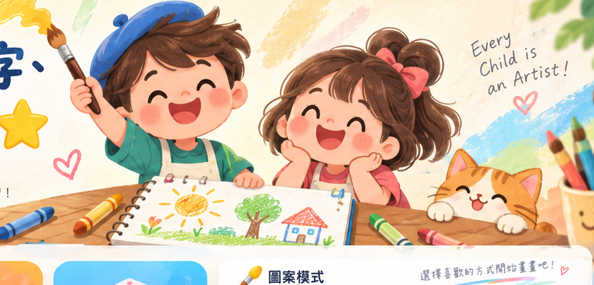

今天想畫什麼呢？
畫一張、學一個字、得到一顆星 ⭐
從 LV1 大輪廓開始，一路挑戰到 LV10 完整場景，支援手指與 Apple Pencil，讓孩子在畫畫中快樂學習。
🎨 彩色 / 線稿雙模式
✏️ 畫一張就學一個字
⭐ 完成即可收集星星

選擇難度
主題分類
圖案庫
全部圖案
🐯
主題學習館
陸地動物
選一張喜歡的圖案開始畫畫吧！
0 張教材
0 張完成
0%
我的完成度
從第一張開始挑戰吧！
LV1
蘋果 Apple
🖼️ 圖案／底圖彩色・15%
圖案樣式選擇
可切換成彩色底圖或黑白線稿，底圖透明度可自行調整。
👁️ 底圖透明度
隱藏 0%預設 15%清楚 100%
🧩 圖層描線・3 層
圖層
點縮圖切換圖層；可新增圖層，最多 8 層。
1 / 200
全部教材
我的作品小藝廊
每完成一張，就留下今天的成長 🌟
把畫過的作品收藏起來，慢慢看見自己的顏色、線條與想像力越來越豐富。
0收藏作品
0挑戰等級
0累積星星
作品收藏牆
每一張作品都是孩子自己的創作紀錄。
🎨🖍️✨
還沒有收藏作品
先挑一張喜歡的教材完成第一幅畫吧！